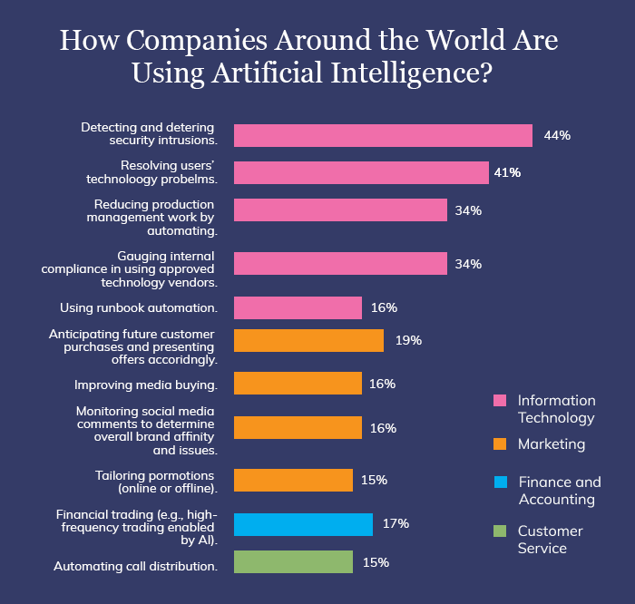
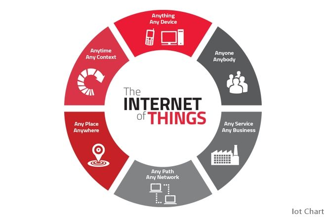
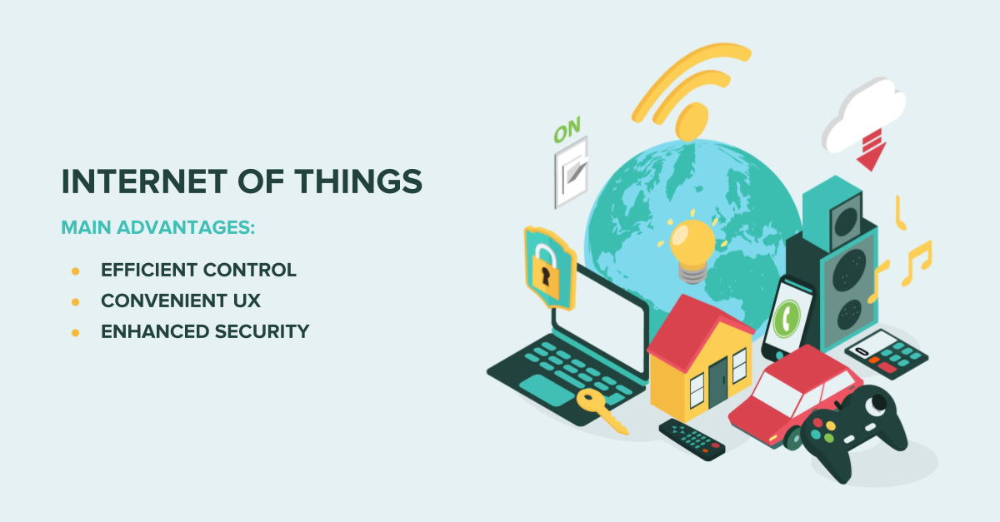
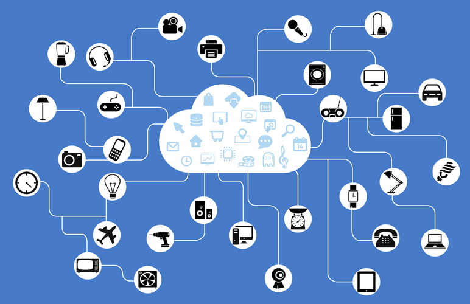
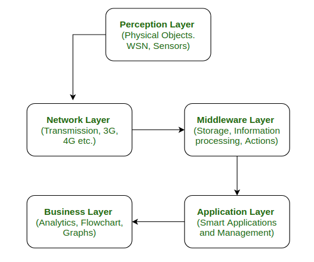
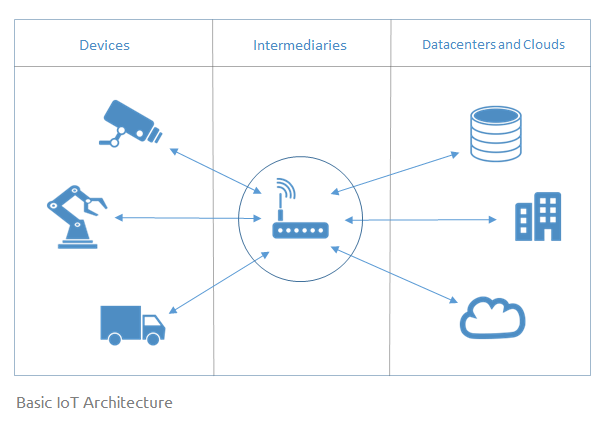
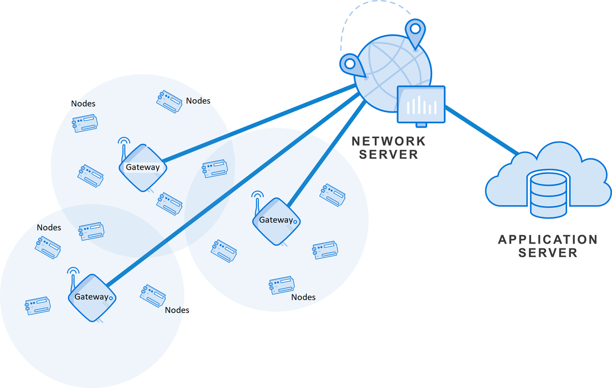

The IoT's major significant trend in recent years is the explosive growth of devices connected and controlled by the Internet. The wide range of applications for IoT technology mean that the specifics can be very different from one device to the next but there are basic characteristics shared by most. The IoT creates opportunities for more direct integration of the physical world into computer-based systems, resulting in efficiency improvements, economic benefits, and reduced human exertions. The number of IoT devices increased 31% year-over-year to 8.4 billion in the year 2017 and it is estimated that there will be 30 billion devices by 2020.The global market value of the IoT is projected to reach $7.1 trillion by 2020
Intelligence:
Ambient intelligence and autonomous control are not part of the original concept of the Internet of things. Ambient intelligence and autonomous control do not necessarily require Internet structures, either. However, there is a shift in research (by companies such as Intel) to integrate the concepts of the IoT and autonomous control, with initial outcomes towards this direction considering objects as the driving force for autonomous IoT. A promising approach in this context is deep reinforcement learning where most of IoT systems provide a dynamic and interactive environment. Training an agent (i.e., IoT device) to behave smartly in such an environment cannot be addressed by conventional machine learning algorithms such as supervised learning. By reinforcement learning approach, a learning agent can sense the environment's state (e.g., sensing home temperature), perform actions (e.g., turn HVAC on or off) and learn through the maximizing accumulated rewards it receives in long term. IoT intelligence can be offered at three levels: IoT devices, Edge/Fog nodes, and Cloud computing. The need for intelligent control and decision at each level depends on the time sensitiveness of the IoT application. For example, an autonomous vehicle's camera needs to make real-time obstacle detection to avoid an accident. This fast decision making would not be possible through transferring data from the vehicle to cloud instances and return the predictions back to the vehicle. Instead, all the operation should be performed locally in the vehicle. Integrating advanced machine learning algorithms including deep learning into IoT devices is an active research area to make smart objects closer to reality. Moreover, it is possible to get the most value out of IoT deployments through analyzing IoT data, extracting hidden information, and predicting control decisions. A wide variety of machine learning techniques have been used in IoT domain ranging from traditional methods such as regression, support vector machine, and random forest to advanced ones such as convolutional neural networks, LSTM, and variational autoencoder. In the future, the Internet of Things may be a non-deterministic and open network in which auto-organized or intelligent entities (web services, SOA components) and virtual objects (avatars) will be interoperable and able to act independently (pursuing their own objectives or shared ones) depending on the context, circumstances or environments. Autonomous behavior through the collection and reasoning of context information as well as the object's ability to detect changes in the environment (faults affecting sensors) and introduce suitable mitigation measures constitutes a major research trend, clearly needed to provide credibility to the IoT technology. Modern IoT products and solutions in the marketplace use a variety of different technologies to support such context-aware automation, but more sophisticated forms of intelligence are requested to permit sensor units and intelligent cyber-physical systems to be deployed in real environments
Architecture
IoT system architecture, in its simplistic view, consists of three tiers: Tier 1: Devices, Tier 2: the Edge Gateway, and Tier 3: the Cloud. Devices include networked things, such as the sensors and actuators found in IIoT equipment, particularly those that use protocols such as Modbus, Bluetooth, Zigbee, or proprietary protocols, to connect to an Edge Gateway. The Edge Gateway layer consists of sensor data aggregation systems called Edge Gateways that provide functionality, such as pre-processing of the data, securing connectivity to cloud, using systems such as WebSockets, the event hub, and, even in some cases, edge analytics or fog computing. Edge Gateway layer is also required to give a common view of the devices to the upper layers to facilitate in easier management. The final tier includes the cloud application built for IIoT using the microservices architecture, which are usually polyglot and inherently secure in nature using HTTPS/OAuth. It includes various database systems that store sensor data, such as time series databases or asset stores using backend data storage systems (e.g. Cassandra, PostgreSQL). The cloud tier in most cloud-based IoT system features event queuing and messaging system that handles communication that transpires in all tiers. Some experts classified the three-tiers in the IIoT system as edge, platform, and enterprise and these are connected by proximity network, access network, and service network, respectively. Building on the Internet of things, the web of things is an architecture for the application layer of the Internet of things looking at the convergence of data from IoT devices into Web applications to create innovative use-cases. In order to program and control the flow of information in the Internet of things, a predicted architectural direction is being called BPM Everywhere which is a blending of traditional process management with process mining and special capabilities to automate the control of large numbers of coordinated devices.







